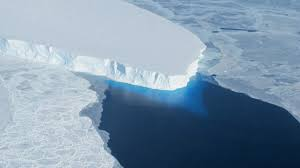
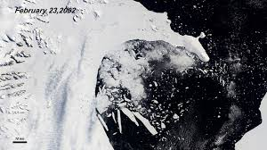
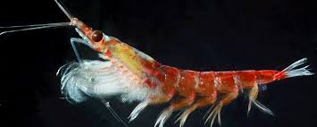
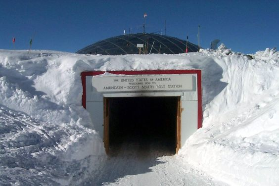
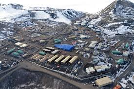
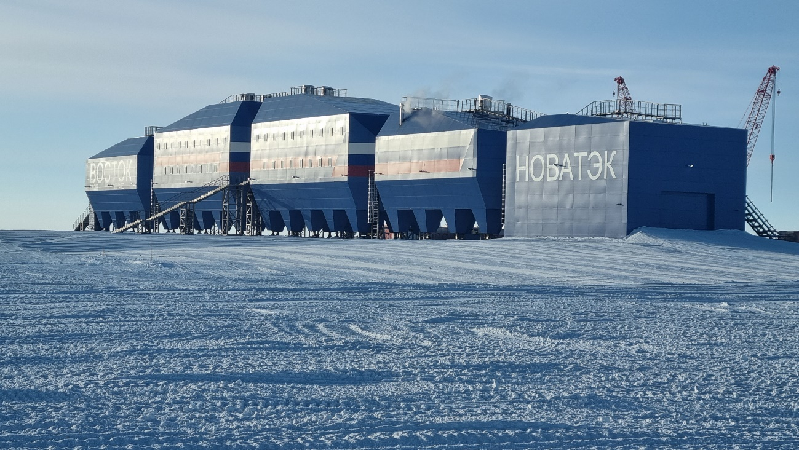

Antarctica's Changing Climate

Temperature Rise
West Antarctica has warmed by 2.4°C (4.3°F) since 1950s
Ice Loss
Lost 3 trillion tons of ice since 1992
Sea Level
Contributed 14mm to global sea level since 1979
Key Impacts

Glacier Retreat
Thwaites Glacier losing 50 billion tons of ice annually

Ice Shelf Collapse
Larsen B shelf disintegrated in 2002

Ecosystem Changes
Krill populations declining by 80% since 1970s
Projected Sea Level Rise
Scientific Research

Antarctic research provides crucial climate data:
- Ice cores reveal 800,000 years of climate history
- Satellite monitoring tracks ice sheet changes
- Ocean sensors measure warming Southern Ocean
- Atmospheric studies reveal CO₂ increases
Key Research Stations

Amundsen-Scott (South Pole)

McMurdo (USA)

Vostok (Russia)